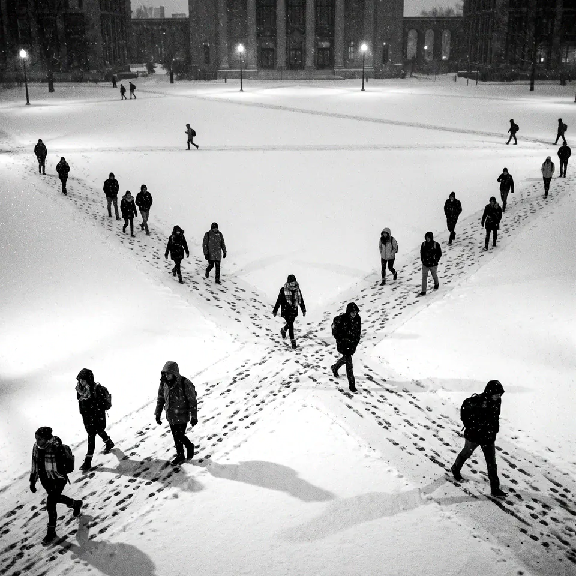
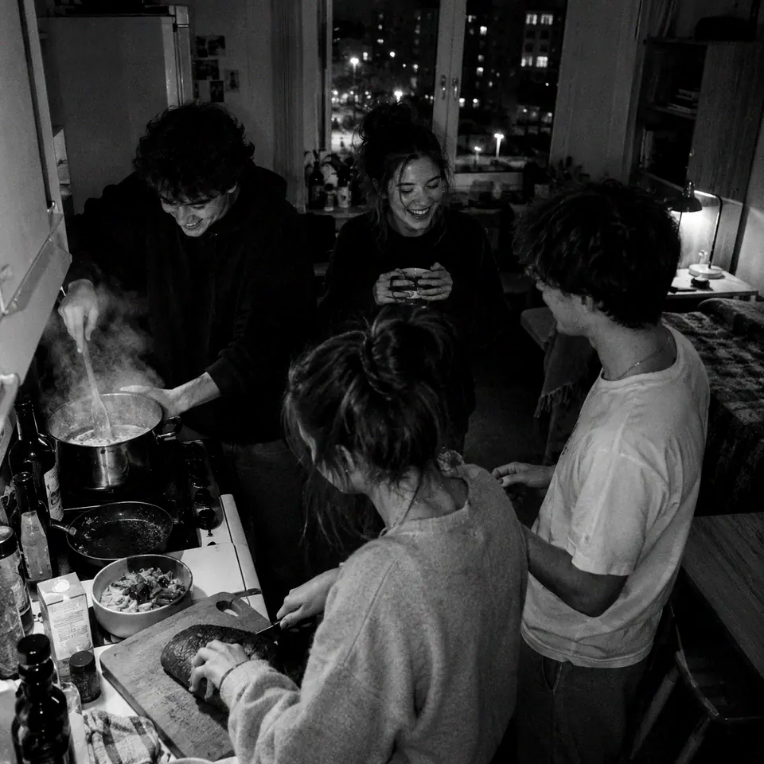
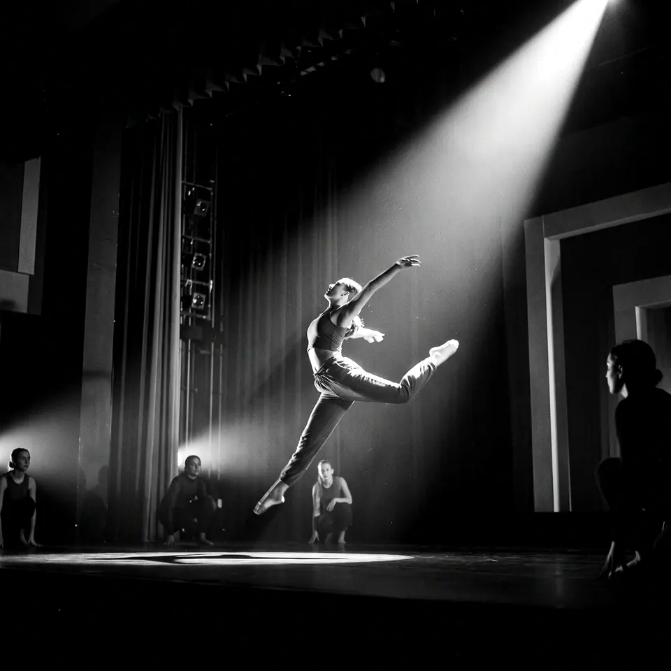

После пар
Общежития, спорт, сцена и люди, с которыми интересно. Всё, что делает пять лет на Урале временем, которое вспоминают.

Общежития
13 800мест для иногородних студентов в 18 общежитиях

Места распределяют после зачисления. Осенью 2026 года первокурсников селили в два этапа: с 12 по 23 октября — на места, не занятые старшими курсами, с 26 октября по 6 ноября — на оставшиеся.
Самые новые корпуса — в кампусе в Новокольцовском, там около 8 500 мест по проекту.

Спорт
33 секции и команды
20 спортивных объектов
От волейбола до лёгкой атлетики — и сборные, которые выступают за университет.

Сцена
20 творческих коллективов
Театр, танец, вокал и всё, что выходит на сцену актового зала главного корпуса.
С кем
Объединения и проекты, куда можно прийти с первого курса.
- Союз студентов УрФУстуденческое самоуправление и проекты
- Объединённый совет обучающихсяголос студентов в решениях университета
- «Точка кипения» УрФУплощадка для встреч, лекций и командной работы
- Волонтёрстводонорские акции, городские и экологические проекты
- Студенческий центрклубы, творчество и досуг
- Премия «Студент года»ежегодный конкурс для лучших студентов вуза